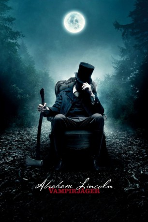

Alternativ: Abraham Lincoln: Vampire Hunter gesehen am 09.03.2015
gesehen am 09.03.2015
 
 IMDB-Wertung: 5.9 / 10
IMDB-Wertung: 5.9 / 10  Metascore:
Metascore: 
Als Neunjähriger wird Abraham Lincoln Zeuge, wie ein Vampir seine geliebte Mutter ermordet. Angetrieben von schwelenden Rachegedanken, entwickelt sich Abe als junger Mann unter den Fittichen des geheimnisvollen Henry Sturgess zum Axt schwingenden Vampirjäger, der die Bestien über seine versilberte Klinge springen lässt. Lincoln steigt in die Politik ein, wird 16. Präsident der Vereinigten Staaten und gewinnt im Bürgerkrieg gegen die Südstaaten, die mit den Blutsaugern gemeinsame Sache machen.
Jahr: 2012
Dauer: 105 Minuten
FSK: 16
Land: USA Studio: 20th Century FoxTonspuren: DTS - ,
Untertitel:
Auflösung: 1080p (1920×800) Größe: 6737 MB
Genre: Action, Fantasy, Horror, Western
Regisseur: Timur Bekmambetov
Drehbuch: Seth Grahame-Smith, Seth Grahame-Smith
Soundtrack: Henry Jackman
Darsteller:
 Benjamin Walker als Abraham Lincoln
Benjamin Walker als Abraham Lincoln Dominic Cooper als Henry Sturges
Dominic Cooper als Henry Sturges Anthony Mackie als Will Johnson
Anthony Mackie als Will Johnson Mary Elizabeth Winstead als Mary Todd Lincoln
Mary Elizabeth Winstead als Mary Todd Lincoln Rufus Sewell als Adam
Rufus Sewell als Adam Marton Csokas als Jack Barts
Marton Csokas als Jack Barts Jimmi Simpson als Joshua Speed
Jimmi Simpson als Joshua Speed Joseph Mawle als Thomas Lincoln
Joseph Mawle als Thomas Lincoln Robin McLeavy als Nancy Lincoln
Robin McLeavy als Nancy Lincoln John Rothman als Jefferson Davis
John Rothman als Jefferson Davis Frank Brennan als Senator Jeb Nolan
Frank Brennan als Senator Jeb Nolan Bill Martin Williams als RR Pastor
Bill Martin Williams als RR Pastor Jaqueline Fleming als Harriet Tubman
Jaqueline Fleming als Harriet Tubman John Neisler als Rev. Dresser
John Neisler als Rev. Dresser Aaron Toney als Will's Brother
Aaron Toney als Will's Brother Teri Wyble als Henry's Wife
Teri Wyble als Henry's Wife Lawrence Turner als Pharmacist
Lawrence Turner als Pharmacist Jake La Botz als Bull Run Private
Jake La Botz als Bull Run Private Dane Rhodes als Captain Slash
Dane Rhodes als Captain Slash John McConnell als Scroll Official
John McConnell als Scroll Official Ritchie Montgomery als Guest #1
Ritchie Montgomery als Guest #1 Jillian Batherson als Dancer
Jillian Batherson als Dancer Chelsea Bruland als Dancer
Chelsea Bruland als Dancer Edward R. Cox als Dancer
Edward R. Cox als Dancer John L. Armijo als Union Soldier / Confederate Vampire , uncredited
John L. Armijo als Union Soldier / Confederate Vampire , uncredited Laura Cayouette als Vadoma Maid , uncredited
Laura Cayouette als Vadoma Maid , uncredited David A Cole als Sgt. Major , uncredited
David A Cole als Sgt. Major , uncredited Rebecca Collins als Townspeople , uncredited
Rebecca Collins als Townspeople , uncredited Donna Duplantier als Midwife , uncredited
Donna Duplantier als Midwife , uncredited Juliet Reeves London als Mary's Sister , uncredited
Juliet Reeves London als Mary's Sister , uncredited Jay Oliver als Pedestrian , uncredited
Jay Oliver als Pedestrian , uncreditedDatei: X:\2012(A-F)\Abraham Lincoln Vampirjäger (2012, FSK16, 1920x800) 3D.mkv seit 02.02.2015
Festplatte: HD 2012(A-M)
 Es gibt insgesamt 102 Filme in der Gruppe '2012(A-F)'
Es gibt insgesamt 102 Filme in der Gruppe '2012(A-F)'